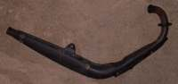
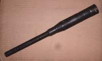
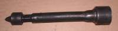
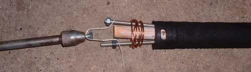
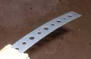
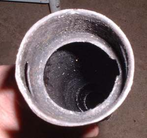
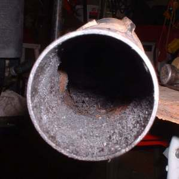
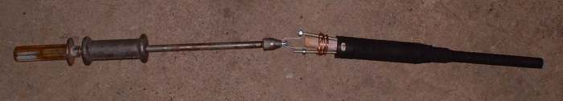
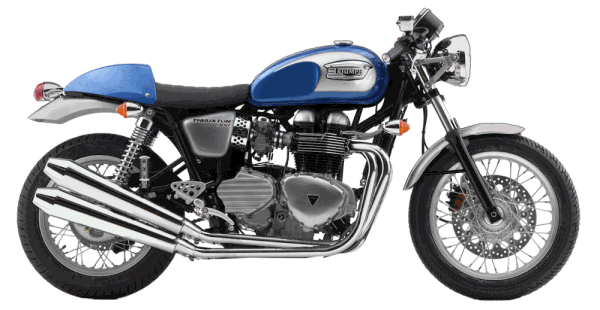
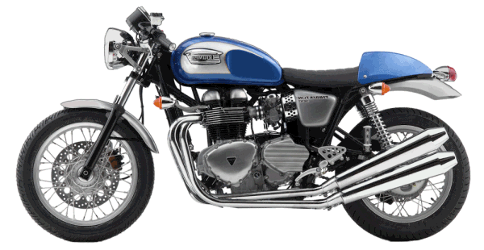

¶Sometimes you run across a rare, delicate, part that must be disassembled. You can't find a new one or the cost of a new one is prohibitive and the part is very easy to destroy.
So what do you do? Easy, invent a special tool.
Here is an example. I had a 41 year old, 1975, TC100 Suzuki come in and I needed to remove the spark arrester from the exhaust pipe. The spark arrester was plugged and glued in with carbon. The spark arrester is in two parts. Three, if you count the muffler itself. It is very easy to bend, crumple or otherwise ruin these hard to get parts.
 Exhaust Pipe |
 Spark Arrester #1 |
 Spark Arrester #2 |
So I find Spark Arrester #1 and Spark Arrester #2 Glued together with oily carbon. I manage, with a bit of fixable metallic bending, to remove Spark Arrester #2 but I just can't get a good grip on Spark Arrester #1. What to do? Simple, I invent a special tool to do it.

I take a washer and cut it in half. Then I take two bolts and weld a washer half to each bolt head. Stick the bolts inside the welded ring inside Spark Arrester #1. Take a big wood dowel and grind two grooves 180 degrees apart to hold the bolts in place.

 # 1 needs to come out. |
 # 1 is out. |

Tool in use.
Now look at how I made the special tool. It is a "Mickey Mouse special" BUT it works. A piece of wood. A couple of nuts and bolts. A plumbing part. A spot of welding and boom, job is done for next to nothing in cost.

My point is this. Use your brain, think wild and crazy thoughts and you can get the job done. On time and under budget. Lots of special tools can be made this way if you just think creatively.

 |
 |
Copyright © 1999-2016 dansmc.com. All rights reserved.